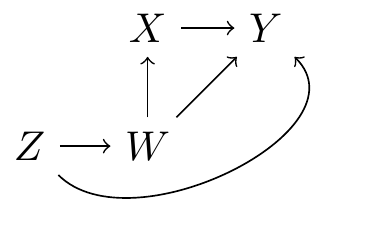

2 模型与意义
从模型到意义 - 中文翻译
来源：Vincent Arel-Bundock，从模型到意义：如何解读 R 和 Python 中的统计模型 - 第 2 章 模型与意义。 来源说明：截至 2026-09-19，修订版 870f15a0 的公共代码仓库不包含本章完整的 .qmd 源文件。本页面根据同日下载的公开 HTML 快照翻译而成。因此，R/Python 代码和图形均以静态形式展示；上游代码未在本网站重新执行。 网站文本 (C) 2025 Vincent Arel-Bundock，保留所有权利；marginaleffects 软件代码依据 GPL-3 许可。 本页面是中文译文，并非原文；译文依据本 Notes 网站所采用的授权声明翻译和发布。
开始数据分析项目的最佳方式是设定明确的目标。本章探讨数据分析师在拟合统计模型或部署机器学习算法时追求的四个主要目标：模型描述、数据描述、因果推断和样本外预测。
要实现这些目标，清晰阐述定义明确的研究问题，并明确指定能够为这些问题提供洞见的统计量——目标估计量，至关重要。理想情况下，目标估计量应尽可能以简单的形式表达，并采用利益相关者、同事和领域专家感觉直观的尺度。
本章最后讨论在试图理解复杂模型时会遇到的一些挑战。在许多情况下，模型参数并不直接对应于我们真正感兴趣的目标估计量。我们往往必须将参数估计值转换为能够直接回答研究问题、且受众容易理解的量。
2.1 为什么要拟合模型？
所有研究人员都必须面对的第一个挑战，是透明地说明他们希望通过分析实现什么目标。下面我概述分析师可以追求的四个目标：模型描述、数据描述、因果推断和样本外预测。
2.1.1 模型描述
模型描述的首要目的，是理解拟合模型在不同情境下的表现。这里关注的是模型本身的内部运作，而不是对样本或总体进行预测或推断。分析师可以窥探“黑箱”内部，审查、调试或检验模型对不同输入的反应。
模型描述与机器学习中的可解释性、可说明性和透明度概念密切相关。这是一项重要工作，因为它可以在一定程度上让我们确信拟合模型按预期运行，并且适合部署。
为了描述拟合模型的行为，分析师可以计算基于模型的预测，即样本中不同亚组的结果变量期望值。1 例如，房地产分析师可以检查其拟合模型是否对不同市场的房价给出合理预期；如果这些预期不切实际，还可以重新设计分析。
在另一种情境下，分析师可能进行反事实分析，以了解当我们改变某些预测变量的取值时，模型的预测如何变化。2 例如，金融分析师可能希望通过比较模型对不同族裔借款人违约风险的判断（同时保持其他预测变量不变），来防范算法歧视。
2.1.2 数据描述
数据描述包括使用统计模型或机器学习模型来描述样本，或对总体进行描述性推断。这里的目标是探索并理解数据的特征，通常通过概括其（可能是联合的）分布来实现。描述性和探索性数据分析可以帮助分析师发现新的模式、趋势和关系。它可以促进理论发展或提出新的研究问题（Tukey 1977）。
数据描述可以说比模型描述要求更高，因为它提出了额外的假设。事实上，如果用于拟合模型的样本不代表目标总体，或者估计方法存在偏差，那么描述性推断可能会产生误导。
为了描述数据，分析师可以使用统计模型计算数据中不同亚组的结果变量期望值。3 例如，研究人员可以概述魁北克 Côte Nord 或 Cantons de l’Est 地区的森林覆盖情况。
2.1.3 因果推断
在因果推断中，我们的目标是估计干预（也称为处理、解释变量、自变量或预测变量）对某个结果变量（也称为响应变量或因变量）的影响。在所有这类领域中，理解某种现象的后果都有助于我们作出明智决策或提出政策建议，因此这是一项基础工作。
因果推断是数据分析中最具雄心、也最具挑战性的任务之一。它通常需要谨慎的实验设计，或能够在观察性数据中调整所有混杂因素的统计模型。为了帮助我们理解作出可信因果论断所需的假设，人们已经建立了多个理论框架。这里我简要介绍其中两个最重要的框架。
Judea Pearl 及其同事提出的结构因果模型方法，将因果关系编码为一组描述变量如何相互影响的方程。这些方程可以通过有向无环图（DAG）进行可视化，其中节点对应变量，箭头对应因果效应。请看图 2.1，它展示了处理 \X\、结果变量 \Y\ 以及两个混杂变量 \Z\ 和 \W\ 之间的因果关系。这样的图有助于我们将理论化的数据生成过程可视化，并透明地传达我们的假设。通过分析 DAG，我们还可以了解在给定情境下，研究设计和统计模型是否满足识别因果效应所需的条件。4

另一个有影响力的因果理论方法是潜在结果框架，即 Neyman-Rubin 因果模型。在这一传统中，我们将因果效应理解为潜在结果之间的比较：同一个人在不同处理条件下会发生什么？对于研究中的每个观测，我们都有两个潜在结果。首先，我们询问如果单位 \i\ 接受处理，会发生什么。然后，我们询问如果单位 \i\ 不接受处理，会发生什么。最后，我们将因果效应定义为这两个潜在结果之差。遗憾的是，我们一次只能观察到一个潜在结果，因为一个个体不可能同时属于处理组和对照组。因此，不可能直接观察处理对任何单个观测单位的效应。5 这一不便的事实通常被称为“因果推断的基本问题”，并促成了估计汇总或平均处理效应的方法发展（见第 6 章和第 8 章）。
因果关系文献浩瀚，对结构因果模型或 Neyman-Rubin 模型的全面讨论超出了本书范围。6 不过，反思数据分析师在讨论实证结果时所使用的语言，仍然很有益处。
当研究设计不满足因果识别的严格要求时，研究人员往往会修改其文本，将强因果措辞替换为较弱的关联性术语。例如，他们可能从观察性研究中删去“导致”“影响”“作用于”或“增加”等词，代之以“联系”“关联”或“相关”等术语。关注我们用于描述统计结果的词语，是提醒受众关联并不必然意味着因果关系的一种方式（Hill et al. 2024）。
不过，近年来，一些人开始反对使用因果委婉语（Grosz et al. 2020；Hernán 2018）。问题在于，研究人员及其受众通常关心的是因果关系，而不仅仅是关联；假装并非如此可能适得其反。考虑一下大量发表的关于“每日酒精摄入量与全因死亡风险之间关联”的研究（Zhao et al. 2023）。推动这些研究的研究问题从根本上说是因果性的：读者希望了解如果停止饮酒，自己的寿命可能延长多少；政策制定者则希望知道劝阻饮酒是否有利于公众健康。我们并不关心单纯的关联；我们关心的是原因所产生的影响！
在论文中改变几个形容词，并不会从根本上改变研究问题，也不能免除我们论证自身假设的责任。事实上，回避因果语言可能会使研究者的目标变得含糊不清，并可能阻碍科学进步。
我们该怎么办？摆脱这一困境的一种方式是保持透明。研究人员可以坦率地说明：“我关注的是 \X\ 对 \Y\ 的因果效应，但我的研究设计和数据存在局限，因此无法作出强有力的因果论断。”当分析目标及其假设被违反的情况都被清楚地列出时，读者就能恰当地解读（并相应降低对）结果的信任程度。
本书第二部分介绍两大类目标估计量，可用于刻画两个变量之间的“关联”，或一个变量对另一个变量的“效应”（第 6 章和第 7 章）。在描述这些量时，我不会回避使用“增加”“变化”或“影响”等因果词语。不过，分析师应当注意，当因果识别的条件被违反时，他们有责任明确、清楚地向受众指出这些违反情况。
2.1.4 样本外预测
样本外预测和预报旨在根据基于现有数据拟合的模型，预测未来或未见过的数据点。这尤其具有挑战性，因为我们需要确保模型不会过拟合数据，并且能够很好地泛化（James et al. 2021）。此外，样本外预测还对数据分布的稳定性提出了额外要求，并要求训练样本与目标数据之间的外生因素不发生变化。例如，在经济危机改变了大量人口的个人财务状况后，一个训练用于预测贷款违约概率的模型可能不再表现良好。
样本外预测并非本书的重点，但第 14.4 节给出了一个保形预测案例研究。保形预测是一种灵活策略，可用于作出预测并构建能够覆盖一定比例样本外观测的区间。
2.2 你的目标估计量是什么？
一旦提出了分析的总体目标，下一步就是严格定义我们探究的对象，即能够阐明研究问题的具体数值。在本书中，我将这一对象称为“感兴趣的量”或“目标估计量”。
目标估计量是我们希望了解的量或参数。估计方法是我们应用于数据、以获得有关目标估计量洞见的统计方法、算法或数学公式。估计值是将估计方法应用于数据后得到的数值结果；它是基于可用信息对目标估计量真实值的最佳猜测。例如，如果我们想知道一个国家所有成年人的平均身高，可以使用均值公式（估计方法）计算出从总体中随机抽取的样本的平均身高为 170cm（估计值）。
在统计学训练和实践中，人们非常重视可以部署的各种估计方法，以及参数估计值的解释。目标估计量却并不总能得到同等程度的关注。这很不幸，因为清楚定义感兴趣的量，对于确保我们选择的估计方法和计算出的估计值能够回应研究问题至关重要。正如 Lundberg 等人（2021）所写：
“在我们读到的每一篇定量论文、参加的每一次定量报告以及撰写的每一篇定量文章中，我们都应该问一个问题：目标估计量是什么？目标估计量就是探究对象——我们借助数据进行推断的确切量。”
这一要求很合理，但我们中的许多人在进行统计检验时，并没有明确界定感兴趣的量，也没有准确解释这一量如何回答研究问题。这种不清晰会妨碍研究人员与受众之间的交流，也可能使我们所有人误入歧途。
为了说明这一点，设想一个数据集，它由与图 2.1相同的数据生成过程产生。进一步假设所有变量之间的关系都是线性的。在这种情境下，我们可以通过拟合线性回归来估计 \X\ 对 \Y\ 的因果效应。7
\ = _1 + _2 X + _3 Z + _4 W + \
乍看之下，这个模型似乎允许我们同时分别估计 \X\、\Z\ 和 \W\ 对 \Y\ 的效应。遗憾的是，公式 2.1中的系数并没有如此直接的因果解释。
一方面，该模型包含了足够的控制变量，可以消除关于 \X\ 的混杂。8 因此，\_2\ 可以作因果解释，即解释为 \X\ 对 \Y\ 效应的估计值。另一方面，公式 2.1包含一个相对于 \Z\ 而言处于处理后的控制变量：模型调整了 \W\，而 \W\ 位于从 \Z\ 到 \Y\ 的因果路径下游。因此，不应将 \_3\ 解释为反映 \Z\ 对 \Y\ 的总因果效应（Keele et al. 2020；Cinelli et al. 2024）。9
这说明了 Westreich 和 Greenland（2013）所称的“表 2 谬误”：由同一个回归模型估计的两个外观相似的统计量，可能具有截然不同的实质解释。回归模型中与控制变量相关的系数，往往与分析本身没有直接关系。逐一、依次解释这些系数，好像它们各自都反映了某个感兴趣的因果效应或相关性，是一种错误。为避免这一陷阱，研究人员必须明确界定目标估计量，并且只强调与该目标估计量真正相关的实证量。
如果界定自己的目标估计量如此重要，为什么许多研究人员却没有这样做？部分原因可能只是统计推断和因果推断都是困难的问题。研究人员往往很难从理论发展、研究设计、测量和统计建模一路保持一致的思路，直到得到估计值。更复杂的是，用于描述感兴趣的量的术语，说实话，十分混乱。事实上，许多广泛使用的技术术语具有平行的含义，甚至含义彼此矛盾。
以流行的“边际效应”一词为例。在经济学和政治学等学科中，边际效应被定义为结果变量相对于模型中某个预测变量的斜率。在这种语境下，“边际”让人联想到模型中某个预测变量发生微小变化对结果变量产生的效应。10 相比之下，来自其他学科、使用同样词语的研究人员通常是在表示他们正在“边际化”，或对单位层面的估计值取平均。11 在前一种情况下，“边际效应”指的是导数；在后一种情况下，它指的是积分！同一个表达竟然有两个完全相反的含义！
本书的主要目标之一，是帮助研究人员克服术语歧义，并帮助他们清晰、轻松地界定目标估计量。为此，第 3 章介绍了一个强大的新概念框架。通过回答五个简单问题，分析师可以严格界定自己的感兴趣的量，并清楚地传达分析结果。
2.3 理解参数估计值
考虑一种典型的统计情境：分析师提出一个研究问题，并选择一个模型以满足特定领域的要求。模型可能旨在捕捉数据生成过程的显著特征、达到令人满意的拟合优度，或控制可能在因果估计中引入偏差的混杂因素。分析师使用估计方法拟合模型，并获得参数估计值及标准误。
即使拟合模型相对简单，它生成的参数估计值也可能无法直接对应于能够回答研究问题的目标估计量；原始参数在实质上可能非常难以解释。例如，分析师对二元结果拟合逻辑回归模型时，通常会得到以对数优势比表示的系数估计值，也就是概率比值之比的自然对数。尽管这个模型本身很简单，其参数仍然以概率的复杂函数形式表示。
但即使是最直接的概率，也出了名地难以直观理解。事实上，心理学和行为经济学中有大量文献记录了各种偏差，这些偏差会扭曲个体基于概率进行感知和决策的方式。在其开创性工作中，Kahneman 和 Tversky（1979）认为，人们往往“相较于确定获得的结果，会低估仅仅具有发生概率的结果”。多年来，人们还发现了许多其他偏差，包括“基率谬误”和各种“保守偏差”（Nickerson 2004）。
如果理解简单概率已经很困难，那么我们怎么能期待同事和利益相关者理解优势比这样的奇怪概念？我们应该如何解释带有样条和交互作用的复杂回归模型所产生的估计值？我们又如何帮助受众理解混合效应贝叶斯模型或复杂机器学习算法产生的结果？
本书的核心观点是，在大多数情况下，分析师不应关注模型的原始参数。相反，他们应将这些参数转换为更直观、更能直接阐明研究问题的量。拟合逻辑回归模型的分析师不应报告对数优势比，而应将系数转换为预测概率，并比较预测变量取不同值时得到的预测结果。
在第 3 章中，我将论证，这种从 logit 系数到预测概率的特定转换，只是一个更普遍工作流程的例子。这个工作流程可以以与模型无关的方式一致应用，用于解释 100 多种不同类别的统计模型和机器学习模型的结果。通过学习一个概念框架和一组工具，分析师就能理解数量极其庞大的建模情境。
Angrist, Joshua D, and Jörn-Steffen Pischke. 2009. Mostly Harmless Econometrics: An Empiricist’s Companion. Princeton university press. Cinelli, Carlos, Andrew Forney, and Judea Pearl. 2024. “A Crash Course in Good and Bad Controls.” Sociological Methods & Research 53 (3): 1071–104. Ding, Peng. 2024. A First Course in Causal Inference. 1st ed. Chapman & Hall. Grosz, Michael P, Julia M Rohrer, and Felix Thoemmes. 2020. “The Taboo Against Explicit Causal Inference in Nonexperimental Psychology.” Perspectives on Psychological Science 15 (5): 1243–55. Hernán, Miguel A. 2018. “The c-Word: Scientific Euphemisms Do Not Improve Causal Inference from Observational Data.” American Journal of Public Health 108 (5): 616–19. Hernán, Miguel A, and James M Robins. 2020. Causal Inference: What If. Chapman & Hall/CRC. Hill, Jennifer, George Perrett, Stacey Hancock, Le Win, and Yoav Bergner. 2024. “Causal Language and Statistics Instruction: Evidence from a Randomized Experiment.” STATISTICS EDUCATION RESEARCH JOURNAL 23 (1). https://doi.org/10.52041/serj.v23i1.673. Imai, Kosuke, Luke Keele, Dustin Tingley, and Teppei Yamamoto. 2011. “Unpacking the Black Box of Causality: Learning about Causal Mechanisms from Experimental and Observational Studies.” American Political Science Review 105 (4): 765–89. Imbens, Guido W, and Donald B Rubin. 2015. Causal Inference in Statistics, Social, and Biomedical Sciences. Cambridge university press. James, Gareth, Daniela Witten, Trevor Hastie, and Robert Tibshirani. 2021. An Introduction to Statistical Learning: With Applications in r. Second Edition. Springer. https://www.springer.com/gp/book/9781071614174. Kahneman, Daniel, and Amos Tversky. 1979. “Prospect Theory: An Analysis of Decision Under Risk.” Econometrica 47 (2): 263–91. http://www.jstor.org/stable/1914185. Keele, Luke, Randolph T. Stevenson, and Felix Elwert. 2020. “The Causal Interpretation of Estimated Associations in Regression Models.” Political Science Research and Methods 8 (1): 1–13. https://doi.org/10.1017/psrm.2019.31. Lundberg, Ian, Rebecca Johnson, and Brandon M. Stewart. 2021. “What Is Your Estimand? Defining the Target Quantity Connects Statistical Evidence to Theory.” American Sociological Review 86 (3): 532–65. https://doi.org/10.1177/00031224211004187. Morgan, Stephen L, and Christopher Winship. 2015. Counterfactuals and Causal Inference. Cambridge University Press. Nickerson, Raymond S. 2004. Cognition and Chance: The Psychology of Probabilistic Reasoning. 1st ed. Psychology Press. https://doi.org/10.4324/9781410610836. Pearl, Judea. 2009. Causality. Cambridge university press. Pearl, Judea. 2014. “Interpretation and Identification of Causal Mediation.” Psychological Methods 19 (4): 459–81. https://doi.org/10.1037/a0036434. Pearl, Judea, and Dana Mackenzie. 2018. The Book of Why: The New Science of Cause and Effect. Basic books. Tukey, John W. 1977. Exploratory Data Analysis. Addison-Wesley. Westreich, Daniel, and Sander Greenland. 2013. “The Table 2 Fallacy: Presenting and Interpreting Confounder and Modifier Coefficients.” American Journal of Epidemiology 177 (4): 292–98. https://doi.org/10.1093/aje/kws412. Zhao, Jinhui, Tim Stockwell, Tim Naimi, Sam Churchill, James Clay, and Adam Sherk. 2023. “Association Between Daily Alcohol Intake and Risk of All-Cause Mortality: A Systematic Review and Meta-analyses.” JAMA Network Open 6 (3): e236185–85. https://doi.org/10.1001/jamanetworkopen.2023.6185.
支持因果识别论断的一种方式，是论证模型满足“后门标准”（Pearl 2009）。相对于一对变量 \(X,Y)\，控制变量集合 \mathbf{K}\ 满足这一标准，当且仅当 \mathbf{K}\ 中没有节点位于从处理 \X\ 出发的因果路径下游，并且 \mathbf{K}\ 的元素“阻断”了 \X\ 与 \Y\ 之间所有包含指向 \X\ 的箭头的路径。↩︎
请注意，重复测量并不能解决这一问题，因为一个人在时刻 \t\ 和 \t+1\ 并不完全相同。↩︎
对于需要了解自己的统计结果能否作因果估计解读的读者，建议阅读该主题出版的众多优秀书籍之一，例如 Pearl（2009）、Angrist 和 Pischke（2009）、Morgan 和 Winship（2015）、Imbens 和 Rubin（2015）、Pearl 和 Mackenzie（2018）、Hernán 和 Robins（2020）或 Ding（2024）。↩︎
如果 DAG 正确，那么在回归模型中调整 \W\ 就足以满足后门标准（Hernán and Robins 2020）。控制 \Z\ 并不是估计 \X\ 对 \Y\ 效应的严格必要条件，但它可能提高估计值的精确性。↩︎
用 Pearl 和 Mackenzie（2018）以及 Morgan 和 Winship（2015）的术语来说，\X\ 与 \Y\ 之间的后门路径已经被关闭。↩︎
按照中介分析的思路，\_3\ 可以解释为 \Z\ 对 \Y\ 的“直接”效应的估计值，而不是其“总”效应。然而，这种解释需要严格的假设，而这些假设在实践中很少能够满足（Imai et al. 2011；Pearl 2014）。同样，也不能将 \_4\ 解释为 \W\ 对 \Y\ 的总效应。↩︎